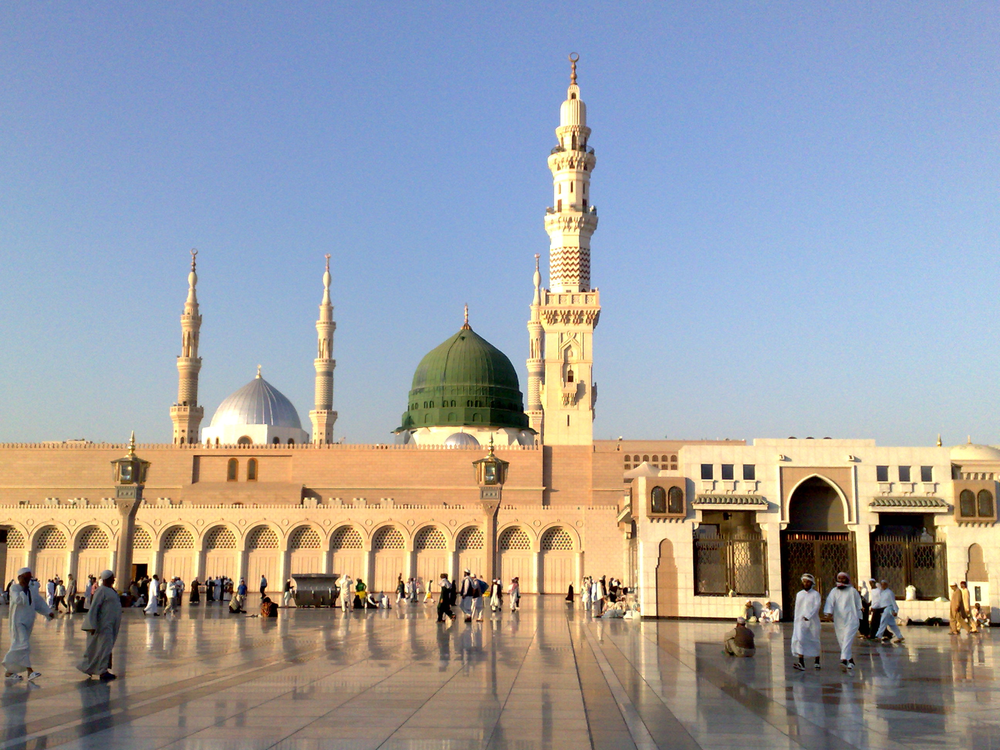

Mecca, officially Makkah al-Mukarramah (Arabic: مكة المكرمة, romanized: Makkat al-Mukarramah, lit. 'Makkah the Noble') and commonly shortened to Makkah, is the holiest city in Islam and the capital of the Mecca Province of Saudi Arabia. The city is 70 km (43 mi) inland from Jeddah on the Red Sea, in a narrow valley 277 m (909 ft) above sea level. Its last recorded population was 1,578,722 in 2015. The estimated metro population in 2020 is 2.042 million, making it the third-most populated city in Saudi Arabia after Riyadh and Jeddah. Pilgrims more than triple this number every year during the Ḥajj pilgrimage, observed in the twelfth Hijri month of Dhūl-Ḥijjah.
Mecca is the birthplace of Muhammad. The Hira cave atop the Jabal al-Nur ("Mountain of Light") is just outside the city and is where Muslims believe the Quran was first revealed to Muhammad. Visiting Mecca for the Hajj is an obligation upon all able Muslims. The Great Mosque of Mecca, known as the Masjid al-Haram, is home to the Ka'bah, believed by Muslims to have been built by Abraham and Ishmael, is one of Islam's holiest sites and the direction of prayer for all Muslims (qibla), cementing Mecca's significance in Islam.
Muslim rulers from in and around the region long tried to take the city and keep it in their control, and thus, much like most of the Hejaz region, the city has seen several regime changes. The city was finally conquered in the Saudi conquest of Hejaz by Ibn Saud and his allies in 1925. Since then, Mecca has seen a tremendous expansion in size and infrastructure, with newer, modern buildings such as the Abraj Al Bait, the world's fourth-tallest building and third-largest by floor area, towering over the Great Mosque. The Saudi government has also carried out the destruction of several historical structures and archaeological sites, such as the Ajyad Fortress. Non-Muslims (Kuffar) are strictly prohibited from entering the city.
Muslims from around the world visit the city, not only for the Hajj and Umrah pilgrimages, but also as tourists to visit regional landmarks such as the 'Aisha Mosque (Masjid 'Aisha) and the sites visited by pilgrims in the Hajj and 'Umrah. Mecca is now home to two of the most expensive buildings in the world, the Masjid al-Haram, valued at 100 billion US dollars, and the Abraj al-Bait complex, valued at 15 billion US dollars.
Under the Saudi government, Mecca is governed by the Mecca Regional Municipality, a municipal council of 14 locally elected members headed by the mayor (called Amin in Arabic) appointed by the Saudi government. As of May 2015, the mayor of the city is Dr. Osama bin Fadhel Al-Barr.] The City of Mecca amanah, which constitutes Mecca and the surrounding region, is the capital of the Mecca Province, which includes the neighboring cities of Jeddah and Ta'if, even though Jeddah is considerably larger in population compared to Mecca. The Provincial Governor of the province from 16 May 2007 is Prince Khalid bin Faisal Al Saud.
Medina, officially Al Madinah Al Munawwarah (Arabic: المدينة المنورة, romanized: al-Madinat al-Munawwarah, lit. 'The Enlightened City'), commonly simplified as Madīnah or Madinah, is one of the three holiest cities in Islam and the capital of the Medina Province of Saudi Arabia. The 2020 estimated population of the city is 1,488,782,[2] making it the fourth-most populous city in the country.Located at the core of the Medina Province in the western reaches of the country, the city is distributed over 589 square kilometers (227 square miles), 293 km2 (117 sq. mi.) of which constitutes the city's urban area, while the rest is occupied by the Hejaz mountain range, empty valleys, agricultural spaces, older dormant volcanoes and the Nafud desert.
The city is considered to be the second-holiest of three cities in Islamic tradition, the other two being Mecca and Jerusalem. The Masjid al-Nabawi ('Prophet's Mosque') built by Muhammad in 622 CE, is of exceptional importance in Islam and is the site of burial of the last Islamic prophet. Muslims visit his rawdhah in what is known as Ziyarat at least once in their lifetime, although this is not obligatory.The original name of the city before the advent of Islam was Yathrib and it is referred to by the same name in the Qur'an in Chapter 33, al-Ahzab (The Confederates). It was renamed Madīnat an-Nabī (City of the Prophet or The Prophet's City) after Muhammad's death and later al-Madinah al-Munawwarah (The Enlightened City), before being simplified and shortened to its modern name, Madinah (The City), written in English as Medina. Saudi Arabian road signage uses Madinah and al-Madinah al-Munawwarah interchangeably.
The city is known to have existed for over 1,500 years before Muhammad's migration from Mecca, otherwise known as the Hijrah. Medina was the capital of a rapidly increasing Muslim caliphate under Muhammad's leadership, serving as its base of operations and as the cradle of Islam, where Muhammad's Ummah (Community), composed of the citizens of Medina, known as the Ansar and those who immigrated with Muhammad, known as the Muhajirun, collectively known as the Sahaba, gained huge influence. Medina is home to three prominent mosques, namely al-Masjid an-Nabawi, Masjid Quba'a, and Masjid al-Qiblatayn, with the masjid at Quba'a being the oldest in Islam. A larger portion of the Qur'an was revealed in Medina in contrast to the earlier Meccan surahs.